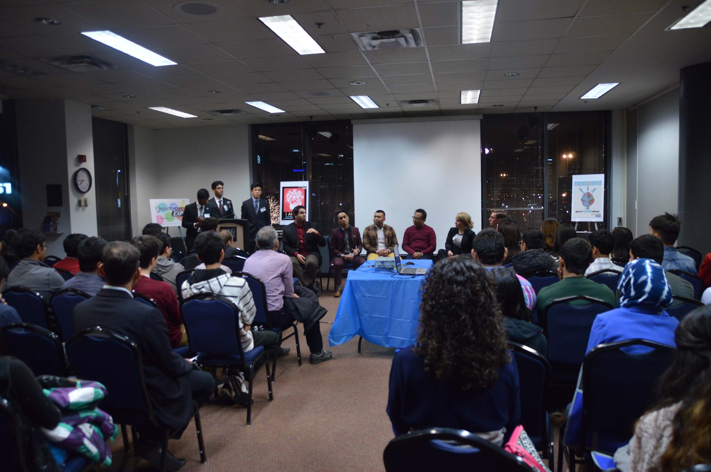
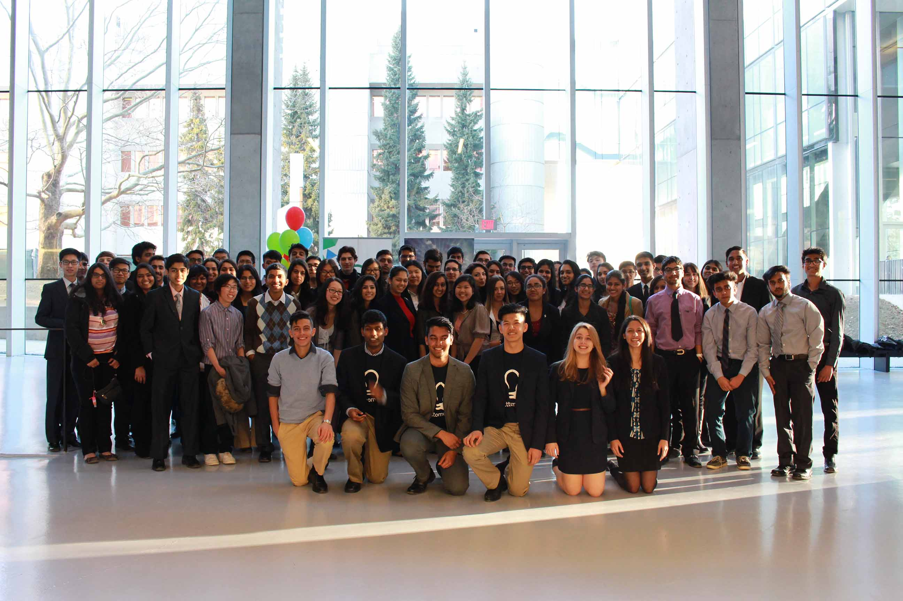

DECA. When I first heard of this club I thought to myself: "Wow. As a prospective business student this is THE extra-curricular activity to be involved in."
DECA is an organization that provides over 200,000 students around the world with opportunities to develop their business and leadership skills through conferences and competitions.
And now, after only 3 years, I am proud to say that DECA has changed me as an individual. Here's my story:
2012
It all started in 2012. In my first year of competing, I joined an oral category in a team of 2 (MTDM). We procrastinated with studying and preparation, and didn't really know what to expect when we walked into our first case study at DECA Ontario Provincials.
We ended up doing very poorly, scoring just above 50% and failing to qualify for the international competition. It was then that I asked myself:
"How do people commit their entire lives to DECA? There is only so much you can prepare for. Why is everyone so enthusiastic about it?"
2013-2014
Fast-forward to 2013. I was recruited by two of my classmates (Rishabh Nag, Revanth Sakthi) to join them in a written event, in the category of Entrepreneurship Promotion Project (EPP). The guidelines suggested that the purpose of the project was to communicate the benefits of entrepreneurship to the general public, by implementing promotional activities through our DECA chapter. So that's exactly what we did.
In order for us to win, we needed to make our promotional activities big. We dubbed our campaign name "Impact Tomorrow" and we created social media accounts to establish the branding for our new non-profit organization. We decided to host an event called the Impact Tomorrow Expo for students to connect with local entrepreneurs, and learn more about entrepreneurship in general.
But enough about me being excited. I think it’s important to iterate some important points about managing early-stage nonprofits:
And believe me when I say that planning an event is not as easy as it sounds. Searching for funding, speakers, and actually getting people to come is easier said than done.
But, we managed to pull it off as a team. Our first event was a success and really motivated us to keep Impact Tomorrow going in the future.
 A Panel Discussion at ITExpo 2013.jpg){kind=link}
DECA 2014 Internationals
Using this event as a foundation for our DECA project, we created a presentation that outlined our campaign. We placed 2nd overall in provincials, followed by a 4th place finish out of 200 teams at my first DECA International Career Development Conference.
We were just a few points shy of the podium, and this left us devastated. We wanted to come back next year bigger and better than before to get that shiny plaque.
2014-2015
We started again from ground zero. We began conceptualizing the next expo, and we realized how much we had grown since last year. We've taken this small DECA project and turned it into a real organization with a real purpose. Last year, we just wanted to win our competition. But this year, our focus was to give back to the community, and to truly nurture a group of aspiring young entrepreneurs.
We started attending community events and local roundtable meetings with other youth organizations to see how we could work together to make our next event a success. I made invaluable connections and it gave me the experience I needed to really start planning our next expo.
With only a month to plan the entire conference I had to work hard, and use my time wisely to balance the trade-off between school and Impact Tomorrow.
Working on the conference almost became an addiction. I gave up on studying for school and participating in my other extra-curricular activities just so I could use my time to plan. I felt like a workaholic, spending 8-10 hours per day during my March Break to work on Impact Tomorrow.
The 2015 Expo was huge. The day started with a keynote address from the Mississauga Mayor, Bonnie Crombie. There were 4 workshop leaders that guided a total of 150 students through a workshop series that brought their innovative business ideas to life. And finally, at the end of the day we received a certificate of recognition from the city that recognizes the work we did for the community.
 Impact Tomorrow Expo 2015.jpg){kind=link}
After the conference came to an end, I had a small (yet significant) breakdown. I realized all the stress I went through for the past month finally paid off and I couldn't have been happier with the outcome of the event. And if there's one thing I learned from all this, it's that event management is not the career path for me.
DECA 2015 Internationals
But back to reality, the 2015 DECA ICDC was coming up, and we prepared a stellar presentation to wow our judges, outlining what we had done to ignite the entrepreneurial spirit in our community for 2 consecutive years.
It turns out we did worse than we expected, and didn't make it past the qualifying round at the international competition. I was shocked, and it took me a full day to get over the loss. But, above all, this ICDC was a humbling experience.
I looked back at my entire DECA career, and realized this loss really doesn't mean much to me in comparison to everything I've accomplished with Impact Tomorrow, and all the skills I developed over the years.
Now, going back to my original question:
"How do people commit their entire lives to DECA? There is only so much you can prepare for. Why is everyone so enthusiastic about it?"
Well, it's safe to say I've probably committed more time to DECA-related activities than I have to all of my courses in school. I've been enthusiastic about it because I've done so much work and I committed my time to try to achieve something.
I've developed this organization that hosts conferences to ignite the entrepreneurial spirit in youth, I've made great connections with youth leaders and entrepreneurs in my community, and I know how to make a killer presentation.
And remember that all of this is a product of DECA. Without DECA I wouldn't have had the drive or motive to make all these things happen the way I did. Even though my partners and I will be off to different universities next year, we're going to keep Impact Tomorrow alive. We'll be incorporating as a non-profit in the next few months and will be passing the torch off to younger executives to keep our events going.
I want to give a special shoutout to:
Rishabh Nag - I sought you for guidance every time I was lost, and you (sometimes) provided me with answers to success.
Revanth Sakthi - You taught me how to pull through in the toughest and most stressful situations.
Rushi Gajaria - You showed me what true loyalty looks like. Your commitment to DECA and Impact Tomorrow inspires me.
Christine Hill - Your sarcastic, yet helpful advice and mentorship helped us accomplish so much more than we thought we could.
Daniel Francavilla - You gave us a lot of new ideas. You helped a lot to organize this year's conference and a simple thank-you is not enough to express my gratitude for your cooperation.
Follow Impact Tomorrow on Twitter and Facebook to keep up with us.